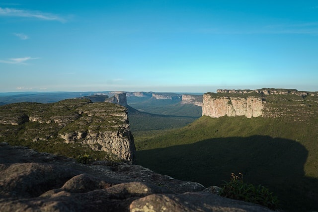

Chapada Diamantina
A Chapada Diamantina, é um verdadeiro tesouro natural do Brasil, é um exemplo vivo da majestosa harmonia entre a biodiversidade exuberante e a preservação ambiental. Situada no coração da Bahia, esta região impressionante cativa a todos que buscam uma conexão autêntica com a natureza. No coração da Chapada Diamantina, as cachoeiras deslumbrantes contam histórias antigas de formação geológica, enquanto suas águas cristalinas convidam a um mergulho revigorante. A Cachoeira da Fumaça, majestosa e imponente, parece tocar o céu, proporcionando um espetáculo incomparável e lembrando-nos da grandiosidade da natureza.
As trilhas serpenteiam por vales verdejantes e levam a mirantes panorâmicos, como o Morro do Pai Inácio, onde a vista se desdobra em uma tapeçaria de montanhas, morros e vales. Cada passo revela a riqueza da flora local, com orquídeas coloridas, bromélias e árvores centenárias que testemunharam eras. Nas grutas e cavernas, como a Gruta Lapa Doce, o fascínio se estende para o subsolo, explorando estalactites e estalagmites que contam a história silenciosa do tempo. A beleza subterrânea é um eco da complexidade geológica que define a Chapada Diamantina. Observação de aves é uma sinfonia de cantos melodiosos, com uma variedade de espécies coloridas que habitam a região. A cada momento, os pássaros contribuem para a melodia única desse ecossistema precioso, proporcionando uma experiência memorável para os amantes da natureza. Os rios e nascentes, como o Rio Mucugezinho, não apenas irrigam a paisagem, mas também oferecem momentos de serenidade e aventura. Banhar-se em suas águas refrescantes é mais do que um ato de lazer; é uma celebração da pureza desses recursos naturais.
A Chapada Diamantina é um convite ao ecoturismo responsável, onde os visitantes são incentivados a trilhar caminhos sustentáveis. Guias locais, defensores da preservação, compartilham conhecimentos sobre a região, fomentando uma conexão profunda e respeitosa entre os exploradores e a natureza. Em cada raio de sol que ilumina as colinas e em cada sombra que se forma nos vales, a Chapada Diamantina revela sua beleza ecológica única. Este é um chamado à conscientização, à preservação e ao apreço por um dos tesouros naturais mais deslumbrantes do Brasil. Na Chapada Diamantina, a ecologia se transforma em poesia, e cada visita é uma promessa renovada de proteger e preservar essa maravilha da natureza.
Trilha Vale do Paty Mucuge - BA

Foto da trilha Vale do Paty
A Trilha do Vale do Pati é uma das mais famosas e deslumbrantes da Chapada Diamantina, situada no município de Mucugê, Bahia. Este percurso oferece uma experiência única, levando os aventureiros por um cenário espetacular de montanhas, vales, cachoeiras e comunidades locais.
Roteiro Geral:
1 - Partida:
- A trilha geralmente começa em Guiné ou na vila de Andaraí, dependendo do roteiro escolhido.
- O acesso pode ser feito por veículo 4x4 ou a pé, dependendo da entrada selecionada.
2 - Guiné a Vale do Capão:
- A trilha muitas vezes inicia em Guiné, levando os caminhantes para o Vale do Capão, uma charmosa vila com uma atmosfera alternativa.
3 - Vale do Capão a Bomba:
- O percurso continua até Bomba, passando por paisagens exuberantes, incluindo o visual do Morro Branco.
4 - Bomba a Cachoeira dos Funis:
- O trajeto segue em direção à Cachoeira dos Funis, um espetáculo natural escondido nas serras da Chapada Diamantina.
5 - Cachoeira dos Funis a Vale do Pati:
- A trilha leva os aventureiros ao Vale do Pati, uma área de beleza incomparável, rodeada por morros imponentes.
6 - Exploração do Vale do Pati:
- Dentro do Vale do Pati, há várias opções para explorar, incluindo o Morro do Castelo, Cachoeira do Calixto e a Gruta da Lapa do Caboclo.
7 - Vale do Pati a Andaraí:
- O retorno pode ser feito em direção a Andaraí, com uma parada em localidades como o Morro do Pai Inácio, proporcionando vistas panorâmicas da região.
Dicas Importantes:
- A Trilha do Vale do Pati é desafiadora e requer boa preparação física. Certifique-se de estar em boas condições antes de iniciar a jornada.
- Recomenda-se contratar um guia local, pois eles conhecem a região, proporcionando segurança e informações valiosas.
- Use calçados e roupas adequados para trilhas, leve mochila com água, lanches, protetor solar e repelente.
- Antes de iniciar a trilha, verifique se há necessidade de permissões específicas e obtenha informações atualizadas sobre as condições da trilha.
- A época mais comum para a Trilha do Vale do Pati é durante a estação seca (abril a setembro), quando as condições climáticas são mais favoráveis.
A Trilha do Vale do Pati oferece uma experiência única para os amantes da natureza, explorando um dos lugares mais espetaculares da Chapada Diamantina. Certifique-se de planejar com antecedência, respeitar a natureza e desfrutar de cada momento nesse cenário deslumbrante.